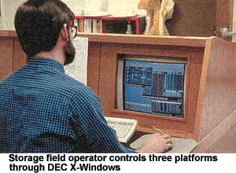
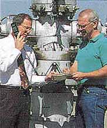

The southern tip of California's Marin county is separated
from the city of San Francisco by the most famous mile-long strip of
steel and concrete in the world. Yet, within a 10-minute walk of the
Golden Gate's Marin terminus begins a county-wide network of California
Wildlife Service signs warning against mountain lion attacks. Marin
county's geography is rugged!
Precipitous hills covered with dense scrub growth and
isolated population centers typify this picturesque but geologically
lumpy and unstable part of the world. And it is here--with an advanced
supervisory control and data acquisition (SCADA) system that would even
make the Mir astronauts sleep more soundly--that the Marin Municipal
Water District (MMWD, Corte Madera, Calif.) now reliably provides its
client population of 180,000 with potable water.
Prior to the implementation of the new SCADA system,
MMWD's 104 pumping stations, 139 storage tanks (ranging in size from
20,000 to 5,000,000 gal.), and myriad control valves scattered across
the district's 147sq miles were largely monitored only by scheduled
inspections or "emergencies"--such as gushing ruptured mains,
land erosion from tank or reservoir overflow, and customer complaints of
having no water. Mechanical failures and aging infrastructure were
aggravated by occasional excessive rains, often accompanied by mud
slides and earthquakes, and by a poorly performing system control.
 MMWD's
previous control system had evolved since the 1960's, and consisted of
tone-telemetry system that used leased telephone lines to allow the
district to remotely monitor tank levels using pulse-duration signals
and start pumps using discrete signals. Initially, the manual start/stop
pump system automatically controlled each pump station based on tank
levels. The original computer system occupied three 6-ft high, 19-in
racks with a "whopping"64K memory. To increase reliability and
facilitate service, this computer was soon replaced with a system of
programmable logic controllers that duplicated the computer's functions.
MMWD experimented with installing remote PLCs at a few
pump/tank facilities that communicated digitally back to the master PLC.
However, the excessive cost of leased lines and high equipment failure
rate soon overcame any gains from the evolved control system. The old
system's maintenance still relied heavily on scheduled visits and
"field alarms"(i.e., phone calls from irate customers). The
necessity to accurately control and document system performance provided
motivation for MMWD to implement the state-of-the-art SCADA system now
in place.
Work begins
Although the new system's
control philosophy was simple (provide control of the booster pumps that
lift water to hilltop storage tanks as needed), system integration was
not. In addition to the new hardware and software installation, MMWD
also saw the opportunity to develop new control strategies to fine tune
water system operation. See accompanying sidebar.
The new SCADA system, based on UNIX-based OASyS software,
version 6.0, developed by Valmet Automation (Houston, Tex.), runs on a
DEC Alpha computer. The software incorporates object-based programming
and three-dimensional data visualization. MMWD built and linked its
displays from AutoCAD files and, more importantly in this installation,
included drawing formats of geographical information system vendors.
The human-machine interface console consists of four CRT
displays and an overhead projector. These devices provide a look into
the system that monitors and controls 6,000 "hard" and
"soft" I/O points spread over 200 remote tank/pump sites and
174 remote terminal units (RTUs). MMWD uses a PC node for the PLC
ladder-logic software. Control executions from the command site include
both pump mode and setpoint changes. Data such as tank levels, system
flow rates and pressures, and alarm events are stored on the system's
hard drive for up to 6 months before being archived to a CD-ROM disk.
Power for all sites needing monitoring was not always
readily available. Approximately 20 MMWD water storage tanks were remote
enough to require a solar-powered electrical supply with battery-backup
for radio modems and on-site RTUs. Despite the rugged terrain, the
remaining sites have utility power.
MMWD's system uses low-cost Schneider Automation (North
Andover, Mass.) "Micro" 612 PLCs as remote terminal units at
each site. These incorporate 56 kbit/sec, digital lease-line modems, and
9.6 kbit/sec digital radios. MMWD has its own frequency for radio
communications, using MDS radios with multiple address 900 MHz for data
only. In cases where a line of sight does not exist between controlled
pump/tank installation and one of the radio system's three repeater
stations, leased digital telephone lines are used.
In addition to handling MMWD's water transmission and
distribution, the new system also monitors four water-treatment plants.
Controlled and monitored by similar "smart" hardware, the
plants are fully integrated into the water district's operational
control system, enhancing operation of the entire water distribution
system.
Project implementation was facilitated through teamwork
between MMWD and its prime contractor, Valmet Automation's Calgary,
Canada office. Cal Tech Controls (Livermore, Calif.) and DST Controls
(Benicia, Calif.) provided project management, hardware fabrication and
integration, and back-up service for the HMI and RTU portions of the
project.
The clear winners in this upgrade have been MMWD's
customers. Improving system control provides both uninterrupted water
service and system flexibility to respond more quickly in case of a
malfunction.
New Control Strategies
As part of the SCADA system implementation, Marin Municipal Water
District (MMWD) took a closer look at its control strategies. Along with
equipment and software upgrades, it was decided some new strategies were
in order. Included as a result of the upgrade was closed-loop control on
valves, alternate control-mode capability for pump stations, optimum
pump selection, and pressure surge data collection.
Key control valve loops within the system were modified
to allow local closed-loop control. An operator can enter criteria
governing local control conditions via the central console. Flow and/or
pressure parameters are then downloaded to the RTU at the pump or
reservoir station. Control valves can then be reconfigured for either
rate-of-flow or pressure-based control by the click of a mouse.
MMWD was also concerned that, because the new system was
centrally controlled, it may have communication problems with pump lift
systems during the winter storm season. For the system to function
properly, the SCADA system must communicate with the pump and its
receiving tank. To solve this problem, an RTU subroutine known as
Alternate Control Mode (ACM), was developed.
If communication is lost with either the pump or its
receiving tank, the ACM subroutine would be automatically initiated
after a predetermined period of time. Once in this mode, the RTU will
not restart the pump until its discharge pressure drops to a preset
value. Once restarted, the pump will only deliver a preset volume of
water. This process will continue until communication has been restored
and regular operation can be resumed.
Pump selection/data collection
In addition to monitoring and controlling "time-of-day"
pump-motor energy use, additional savings were obtained by programming
the RTUs to run the most efficient pump--there are several in each
stations--based on capacity required. High demand conditions
automatically switch pump operation to the unit that can efficiently
meet the volume requirement.
In order to more tightly monitor pressure surges in the
system, MMWD needed to retrieve finer resolution data than could be
provided by the system's 15-sec scan time. To facilitate retrieving high
resolution data from this sprawling control system, the user resorted to
some "creative" PLC programming. The solution was to take the
PLC registers and place them in a "rolling table" (FIFO)
configuration with a time difference between each register as low as 10
msec. Once a pressure surge occurred, the registers were frozen at their
the pre-event data content. At this time, the PLC starts to fill an
additional register with post-event data. Once this table fills, all 200
registers are downloaded to the SCADA system.
|